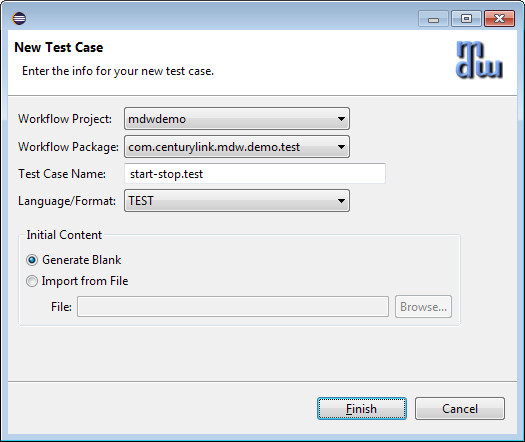
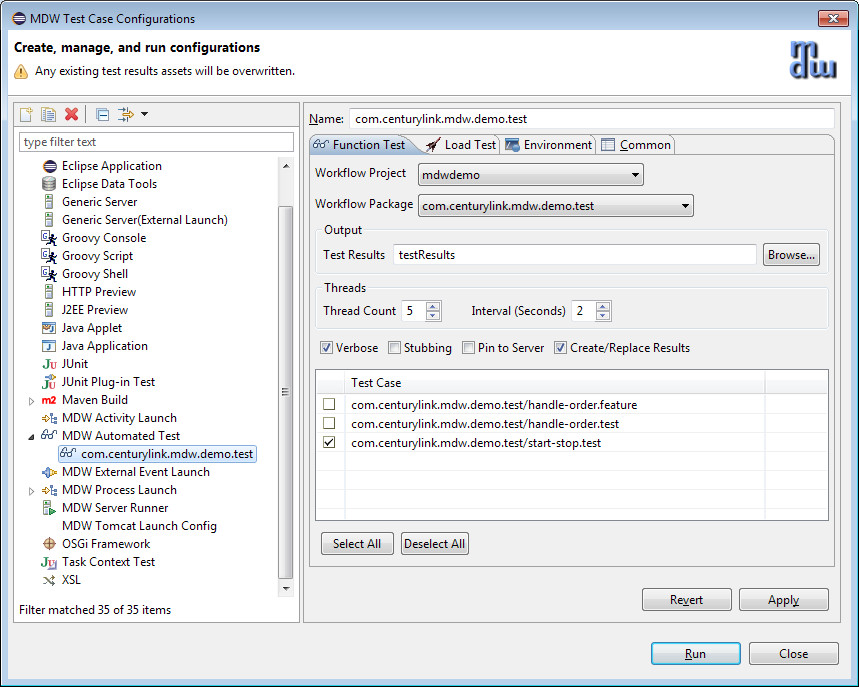
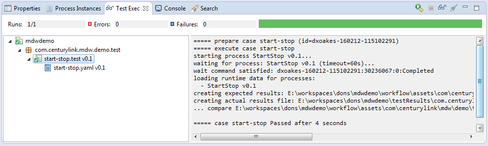

Typical steps for function testing of MDW applications include:
Using Designer you can create repeatable test cases to automate these and other actions. Your test cases can be executed on demand in Designer or from your build server as part of a continuous integration lifecycle using the Ant Automated Test task. MDW also supports load testing to exercise your workflow processes and capture performance metrics.
A test case is a way to specify how to run an automated function or load test. Each test case is stored as a workflow asset. A typical test case will make use of the following resources:
<test_case_name>.test or <test_case_name>.feature (required) - The main test execution script in
Groovy or Gherkin syntax respectively.
A number of Groovy examples and
Gherkin examples are available to get you started.
<test_case_name>.yaml (optional) - This is the YAML asset that contains the expected results for
your test execution. By convention this asset has the same name as the test case, with the 'yaml' extension; however, in your test script
you can designate a different YAML asset that contains the expected results. A test case can initiate multiple process instances, and in that
case the expected results for all these instances are included in the results file with a name element
to indicate the name of the process and a instance element which is a 0-based sequence
number indicating the n-th instance of the process with this name.
The content of this expected results YAML for each process specifies the sequence of activity instances to be executed,
and the expected values of all variables at the end of execution. The easiest way to get a first
iteration of this file is to launch the test and click the "Create/Replace Results" checkbox in the Designer dialog.
Running test cases in Designer is described below. For load tests the expected result files are not required or evaluated since this
could consume resources and distort the generated performance metrics.(test input files) (optional) - Input/payload values can be declared inside your test script,
but frequently you'll find it convenient to keep this content in separate files.placeHolderMap.csv (optional) - This file is in Comma-Separated-Value format as saved and recognized
by Microsoft Excel. It supplies parameterized values to be substituted for placeholders during test execution.
The first row in this file contains placeholder names, and the second and subsequent rows consist of data values
to apply. This is especially useful during load testing where unique values may be required for each execution.execute.log - This is the log file for the tester thread. This output can also
be viewed in real time during execution in the Designer Test Exec view.<test_case_name>.yaml - For each test case, a results file with the
same name as the expected results YAML asset is generated. Success or failure of function tests
is determined by comparing each of these filesTo launch the Test Case Wizard, right-click on a workflow package in Process Explorer and select New > Test Case from the menu.
When you click Finish, a blank Groovy test script command file will be generated and opened in an editor pane. If you've got the MDW framework test processes present in your workspace you can use the following test script verbatim. If you don't have the MDW test processes, you can create a simple process and reference that in the "start" and "verify" commands.
// start-stop process test
start process("com.centurylink.mdw.tests/StartStop")
wait process
verify process
The meaning of this sequence is fairly obvious. For a full discussion of the available testing commands, refer to the Groovy Test Script Syntax guide.
Note: You can import the MDW framework test cases (or any other shared cases) using the MDW Asset Discovery mechanism. The framework test cases provide examples of over one hundred functioning tests that you can refer to when creating your own. The framework test case assets are in workflow packages com.centurylink.mdw.tests and com.centurylink.mdw.tests.cases.
If your server is running you can execute the test case now by right-clicking on it and selecting "Run..." from the menu. Make sure to enable "Create/Replace Results" or else the case will fail with an error telling you that no expected result file exists for the process being verified.
As your test case executes the Test Exec view in Designer shows a green bar to indicate progress and displays the test output in its console pane on the right side. The test should succeed since the expected results YAML asset is generated from the actual outcome. And on completion the results asset start-stop.yaml should appear in your workflow package in Process Explorer.
Note: Test cases run on the client in Designer and interact with the server through built-in REST services. Since test scripts are run on the client, this means that you need the Groovy Plugin installed to run test cases in Eclipse. In Designer RCP, Groovy is already included so no additional plugin is necessary.
There are three main ways to launch automated tests in Designer:The automated test launch dialog supports the options summarized below. These are saved as an Eclipse launch configuration, which is a named setup that remembers these settings as well as the list of test cases to run. The launch configuration dialog contains separate tabs for Function Testing and Load Testing. For Load Testing, next to each selected case a Count column appears to specify the number of executions for that test.
The green bar in Test Exec view will be familar to developers who've used the JUnit runner in Eclipse. The Test Exec tree pane shows which cases are scheduled to run, along with their statuses. While a test is running its tree icon displays an arrow symbol indicating that it is in progress, and when it's completed, the icon is updated to to indicate success or failure. The same status indication appears on the test case in Process Explorer view. The difference is that Process Explorer remembers the history of all test cases, whereas Test Exec view shows only the current run(s).
While a test is executing or when it's completed, you can select it in Test Exec tree view to see its output. Once the test has produced results, the icon for its result node in Test Exec view changes to indicate that there are now actual results corresponding to the expected results file.
Now that your start-stop test is complete, you can right-click on the start-stop.yaml results in Test Exec and select Compare Results and the Eclipse Text Compare editor should show the differences, with the expected results on the left and the actual results on the right. Using the merge-left center icon, or simply by cutting and pasting, you can copy the actual results into the expected results file and hit ctrl-s to save. This is another way you can overwrite an existing results asset once you've had a good test case run.
For a detailed explanation of the contents of these test result files format, refer to the MDW Test Results Format document.
Another option available by right-clicking on the StartStopProcess_I1 result is "Open Process Instance", which is especially handy for troubleshooting when you need to look into the reason why a test case failed.
Process Explorer shows the status of all the tests that have been executed for a project. This same information can be displayed as an HTML page by right-clicking on the Automated Tests folder and selecting Format Results > Function Tests (or Load Tests, if available).
With VCS Assets, the XSL stylesheet for transforming raw test results into HTML in Designer can be customized by creating any workflow package ending in ".testing" and within that creating an XSL asset named function-test-results.xsl (for function testing) and/or load-test-results.xsl (for load testing). The default stylesheets with these names are available in the com.centurylink.mdw.testing package as a starting point.
The HTML results summary can also be generated during test case execution using Ant. In a continuous integration environment it's a good idea to generate the test case HTML summary into a location that's accessible to a web server so that a link to the current test results can always be accessed from a browser.
Load tests are similar to automated function tests, and in Designer they're launched using the same dialog. On the Load Testing tab there's a Count column in the Test Case table where you'll enter the desired number of executions for each selected test.
The loader tester can run most test cases defined for function testing, but any verify commands are ignored. The load tester does not generate per-test result files or validate outcomes; instead focusing on overall throughput. Therefore test cases to be used for load testing should be already known to execute correctly. Load tests performance results are generated in main testResults directory. An HTML summary can be viewed in Process Explorer by right-clicking on the Automated Tests folder and selecting Format Results > Load Tests
You can add a test resource file called placeHolderMap.csv to supply different values for separate runs.
The load tester uses the rows in the file sequentially. If the number of runs is larger than the number of rows in the file,
the load tester repeats from the first row again once the last row is used. In your process variables or message content,
the placeholder syntax #{placeholdeNamer} will be substituted from corresponding column value in the CSV file.
An special implicit value, #{RunNumber} is assigned a 1-based index value corresponding to the sequential run
number within the given case. For example, consider the following test script:
// start process with CSV placeholders
start process("com.centurylink.mdw.tests/MDWLoadTestRegular") {
variables = [Run: "#{RunNumber}", Color: "#{Color}", Month: "#{Month}" ]
}
Values for RunNumber, Color and Month would be automatically populated from this CSV content:
Color,Month Red,January Green,Feburary Blue,March
To provide test coverage as part of your continuous integration procedure, you can use the MDW automated test Ant task in a build script. Here's an example automated test target which runs regular groovy tests:
<target>
<echo message="Running MDW Automated Tests" />
<taskdef name="mdwtests" onerror="report"
classname="com.centurylink.mdw.designer.testing.AutoTestAntTask"
classpathref="maven.test.classpath" />
<taskdef name="testReport" onerror="ignore"
classname="com.centurylink.mdw.ant.taskdef.AutoTestReport"
classpathref="maven.test.classpath" />
<mdwtests
suiteName="mdwdemo"
excludes="*-gherkin"
serverUrl="http://ne1itcdrhews10.dev.intranet:12081/mdw"
workflowDir="workflow/assets"
testCasesDir="testCases"
testResultsDir="testResults"
testResultsSummaryFile="testResults/TestSuiteResults.xml"
threadCount="5"
intervalSecs="2"
sslTrustStore="src/main/resources/CenturyLinkQCA.jks"
user="mdwapp"
password="ldap_012"
stubbing="false"
verbose="false" />
<!-- mdwtests
suiteName="mdwdemo-gherkin"
includes="*-gherkin"
serverUrl="http://ne1itcdrhews10.dev.intranet:12081/mdw"
workflowDir="workflow/assets"
testCasesDir="testCases"
testResultsDir="testResults"
testResultsSummaryFile="testResults/TestSuiteResults.xml"
threadCount="5"
intervalSecs="2"
sslTrustStore="src/main/resources/CenturyLinkQCA.jks"
user="mdwapp"
password="ldap_012"
stubbing="false"
verbose="false" /-->
<testReport todir="testResults"
testOutputFile="testResults/TestSuiteResults.xml"
xslFile="./testCases/test-results.xsl"
emailRecipients="manoj.agrawal@centurylink.com">
<report todir="testResults" format="noframes" />
</testReport>
<copy file="testResults/junit-noframes.html"
tofile="testResults/mdwdemoTestResults.html" />
</target>
If you uncomment mdwdemo-gherkin section and comment mdedemo-groovy then it will run all the test cases named as *-gherkin.
mdwaap is a user here which is authenticated against LDAP. You can replace it with your own app user. You will also need CenturyLinkQCA.jks which can be downloaded from here
Note: You cannot mix and match Groovy and Gherkin test cases in the same target, but you can have run two separate targets successively to execute both sets of tests.
There is good way to get a good pom.xml sample to start with is to use Test Case import feature in eclipse and select a gherkin test case from standard out of the box tests provided by MDW team.
The test results XML can be transformed into friendlier HTML and e-mailed to a distribution using the test report task:
<taskdef name="testReport" onerror="ignore"
classname="com.centurylink.mdw.ant.taskdef.AutoTestReport"
classpathref="tests.classpath" />
<target name="reportTestResults">
<testReport todir="testResults"
testOutputFile="testResults/TestSuiteResults.xml"
xslFile="./testCases/test-results.xsl"
emailRecipients="mdw.development@centurylink.com">
<report todir="testResults" format="noframes" />
</testReport>
<copy file="testResults/junit-noframes.html"
tofile="${publish.dir}/NightlyTestResults.html" />
</target>
TODO: describe this feature with screenshots from AdminUI
As described above, MDW test cases can be written as Cucumber features using Gherkin syntax. As a convenience, the MDW Eclipse plugin also provides a facility to execute Cucumber features that are not MDW test cases. A brief description of this capability is available under General Cucumber Features.